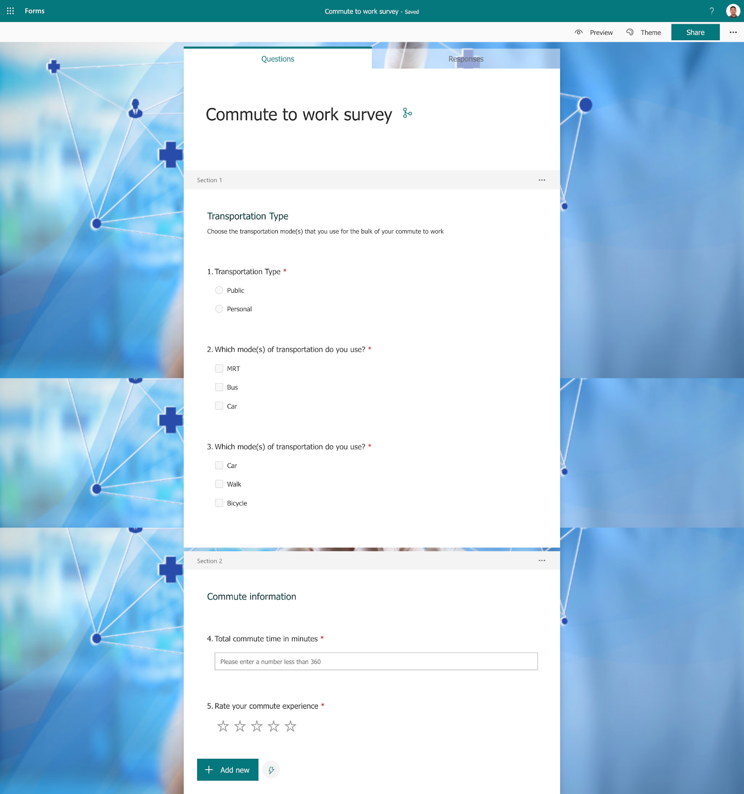
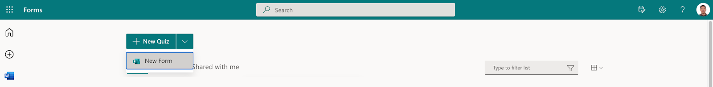
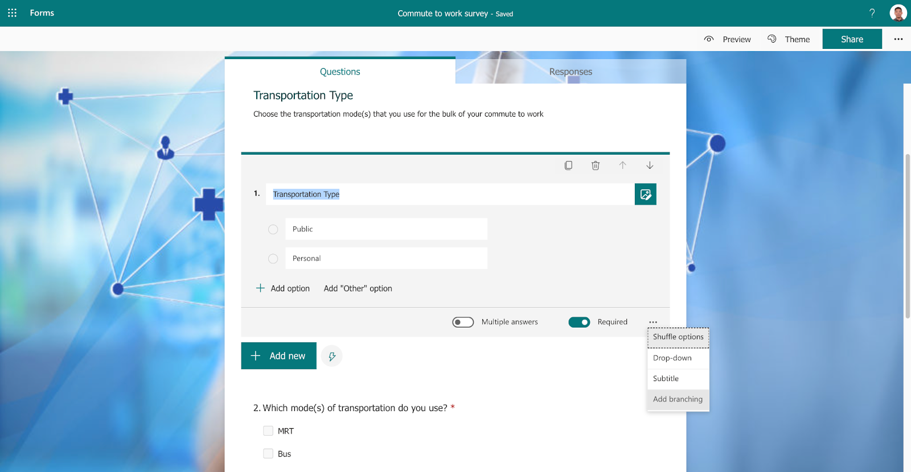
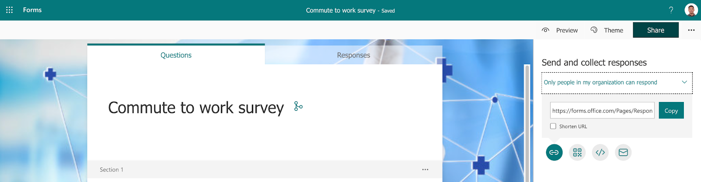
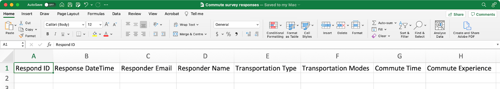
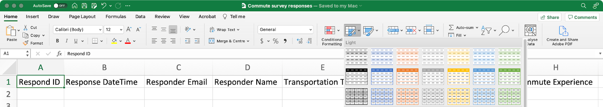
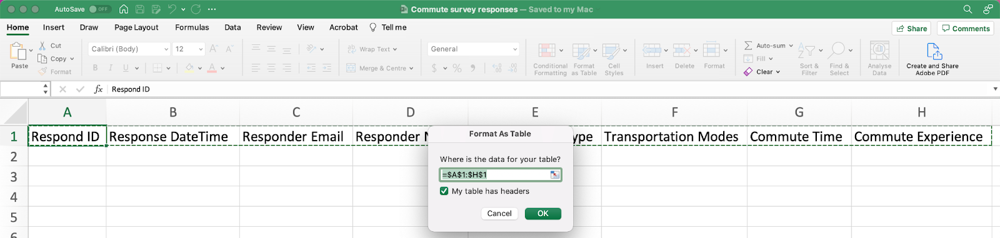
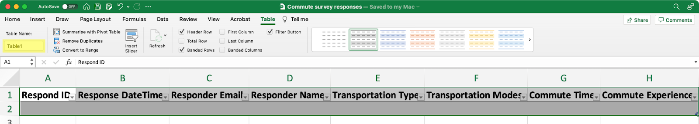

What you'll learn
- Microsoft Forms - form creation
- Sharepoint - list creation
- Power Automate - automated flow
Scenario
- Create a form in Microsoft Forms about commute to work
- Create an Excel file in OneDrive to store the form responses
- Create a Sharepoint List to store the form responses
- When a new form response is submitted
- save the response to the Excel file and the Sharepoint List
- send an acknowledgement email to the respondent
References
Form to be created

Steps
Form creation
- Log in to Microsoft Forms
- Create a new form
Commute to work survey

Section and question creation
- Create all sections and questions
Section 1 |
|
|
Question 1 Choice Required |
|
|
Question 2 Choice Multiple answers Required |
|
|
Question 3 Choice Multiple answers Required |
|
|
Section 2 |
| |
Question 4 Text Restrictions Less than 360 |
| |
Question 5 Rating Levels 5 Symbol Star |
|
Branching
- In Question 1, click on the ellipses and select
Add branching.

- Configure branching.

Form URL
- Click
ShareandCopyto copy the URL to the form

- Create an Excel document with the following headings
Respond ID Response DateTime Responder Email Responder Name Transportation Type Transportation Modes Commute Time Commute Experience

- Click
Format as Tableand select a table style.

- Confirm the range of cells for the table and check
My table has headers

- The table should have the default name of
Table1

https://docs.microsoft.com/en-us/learn/modules/get-started-flows/
Important concepts in Power Automate
- Every flow has two main parts: a trigger, and one or more actions.
- You can think of the trigger as the starting action for the flow. The trigger can be something like a new email arriving in your inbox or a new item being added to a SharePoint list.
- Actions are what you want to happen when a trigger is invoked. For example, the new email trigger will start the action of creating a new file on OneDrive for Business. Other examples of actions include sending an email, posting a tweet, and starting an approval.
Overview
- https://docs.microsoft.com/en-us/power-automate/getting-started
- https://docs.microsoft.com/en-us/power-automate/learning-catalog/learning-catalog
App maker
Developer
Functional consultant
App maker
https://docs.microsoft.com/en-us/power-automate/learning-catalog/learning-catalog-app-maker
https://docs.microsoft.com/en-us/learn/modules/get-started-flows/1-introduction
https://docs.microsoft.com/en-us/power-automate/desktop-flows/introduction